Префектура Миэ · Исэ · природа и обряды
Лес святилища Исэ: кипарисы на двести лет вперёд и праздники священного дерева
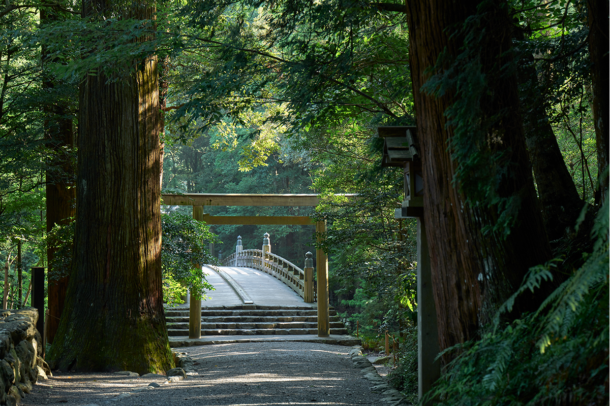
Святилищу Исэ больше двух тысяч лет, но выглядит оно всегда новым: раз в 20 лет его отстраивают заново. Для этого нужны тысячи кипарисов, и уже сто лет святилище растит их в собственном лесу с расчётом на двести лет вперёд.
Токовака
Вечно молодое святилище
Святилище Исэ (Исэ-дзингу, официально просто Дзингу) японцы называют «родиной души». Его сердце составляют два святилища: Внутреннее святилище Найку, где почитают богиню солнца Аматэрасу-омиками, прародительницу императорского рода, и Внешнее святилище Гэку, посвящённое Тоёукэ-но омиками, хранительнице пищи, одежды, жилья и ремёсел. Всего в комплекс входят 125 святилищ, и все они окружены лесом из кипарисов хиноки и широколиственных деревьев.
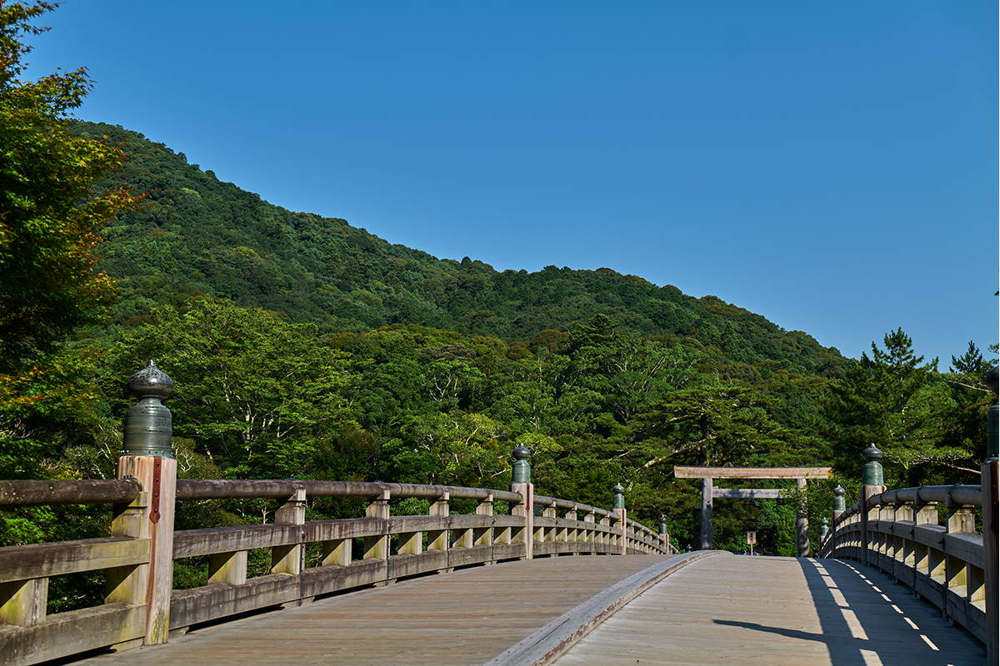
В этом лесу издавна берегут идею «токовака», вечной молодости: оставаясь всегда юным и чистым, святилище сохраняет вечность. Старинная песня вака говорит о листьях сакаки на священной горе, которые пышно разрослись перед лицом богов. Сакаки, вечнозелёное дерево, ставят повсюду в святилище: его листья считаются знаком «мусуби», силы, которая порождает всё живое, а их неувядающая зелень олицетворяет процветание богов.
Каменные постройки кажутся вечными, но и они со временем выветриваются и превращаются в руины. Деревянное святилище идёт другим путём: «меняться, чтобы не меняться». Главный обряд Исэ называется сикинэн сэнгу: раз в 20 лет здесь заново строят все святилища, обновляют мост Удзи, ворота тории, облачения и священную утварь. Обычай завёл император Тэмму, правивший Японией в 673–686 годах, и он соблюдается уже около 1300 лет. В последний раз, 62-й по счёту, сэнгу провели в 2013 году.
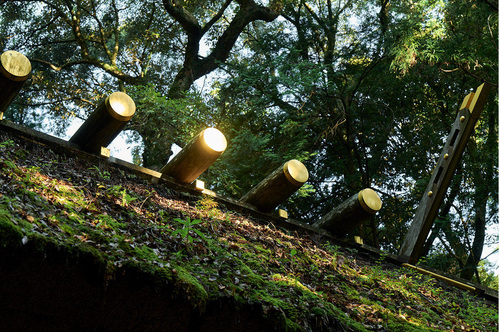
Святилища строят в древнем стиле юйицу-синмэй-дзукури, и без хиноки здесь не обойтись. На одну перестройку уходит около 10 000 стволов, примерно 10 000 кубометров древесины. И рубить её можно только на чистой священной горе Мисомаяма. Собственные леса Исэ начали истощаться ещё в конце XIII века, и за деревом пришлось ездить в горы Мино и Кисо, далеко от святилища. В 1923 году святилище приняло план управления лесом: цель в том, чтобы снова обеспечивать себя древесиной и вернуть Мисомаяму в горы Исэ. Кипарисы по этому плану растят 200 лет.
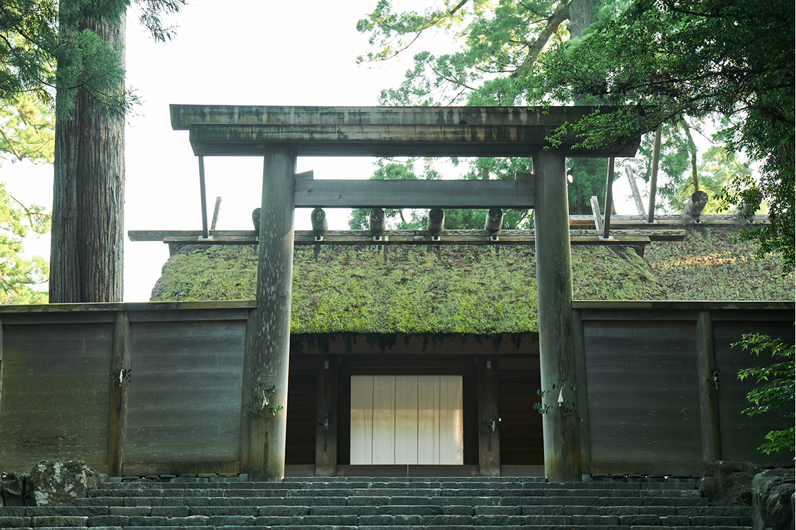
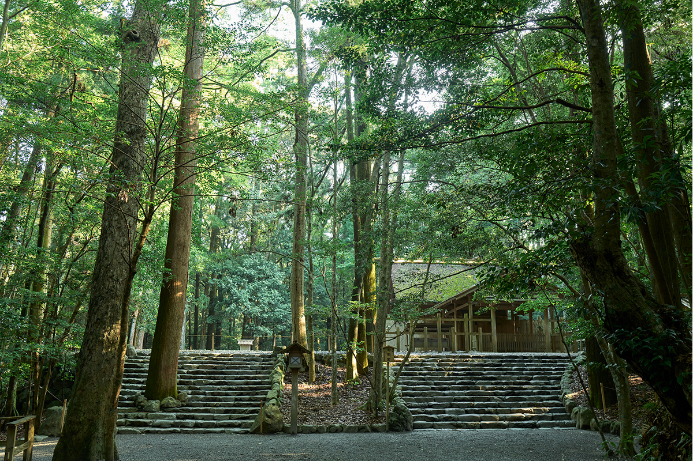
Прежде чем подойти к святилищам, паломники очищаются у реки Исудзу. На берегу устроено место для омовения Митараси, где можно сполоснуть руки так же, как у обычного павильона для омовения.
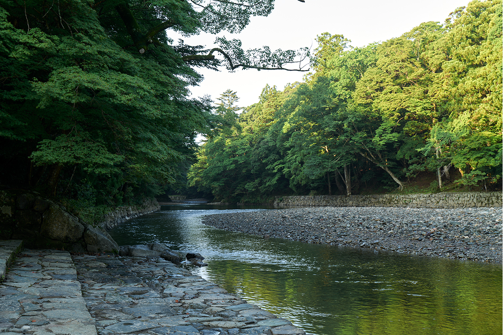
Лес
Кипарисы, которые вырастут для наших правнуков
Лес святилища, Кюикирин, обступает Внутреннее святилище со всех сторон. Его почитают как гору богини, а около 1300 лет назад, при первом сэнгу, он был объявлен священной горой Мисомаяма. Обычно туда не пускают, но для этого рассказа святилище дало особое разрешение.
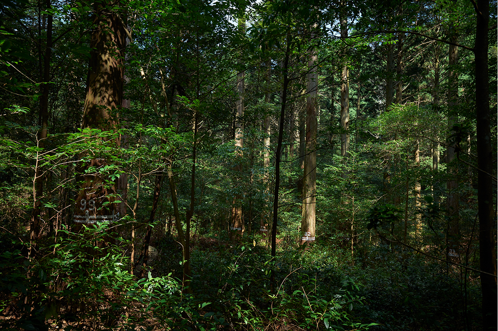
Ждёшь увидеть ровные ряды посаженных кипарисов, а попадаешь в лес, где растут самые разные деревья. По площади хиноки и широколиственных деревьев здесь примерно поровну. Смешанный лес оставили намеренно.
«Здесь нельзя один раз посадить, срубить и забыть. Это нужно повторять веками. Опавшие листья разных деревьев превращаются в плодородную почву, на которой вырастают хорошие хиноки. Так сохраняются и красота пейзажа, и истоки реки Исудзу. Только тогда это и есть лес святилища»
инженер-лесовод святилища
Здесь не гонятся за выгодой и берегут природное разнообразие леса: без этого святилище не может долго оставаться здоровым.
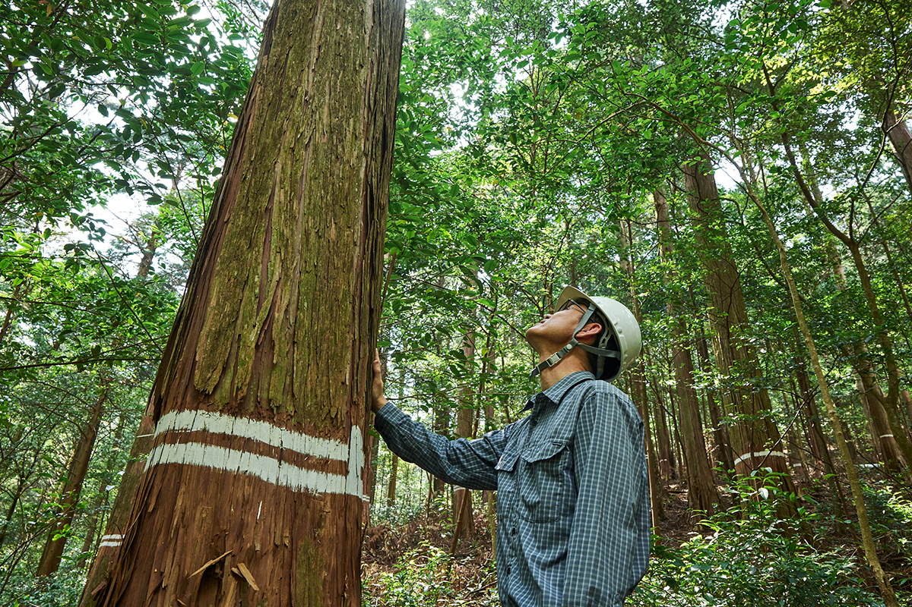
По всему лесу стоят хиноки с двумя белыми полосами на стволе. Так отмечены деревья, которые должны стать великанами. Для некоторых частей святилища нужны стволы толщиной больше метра на высоте груди: например, для мунамоти-басира, самых толстых столбов главного здания, которые держат конёк крыши. Такие деревья выбирают рано и смотрят на прямизну волокон, толщину, корни и ветви. Соседние деревья, которые касаются их ветвями, вырубают в первую очередь: так кандидату достаётся больше солнца, лучше сохраняется почва, и дерево растёт быстрее.
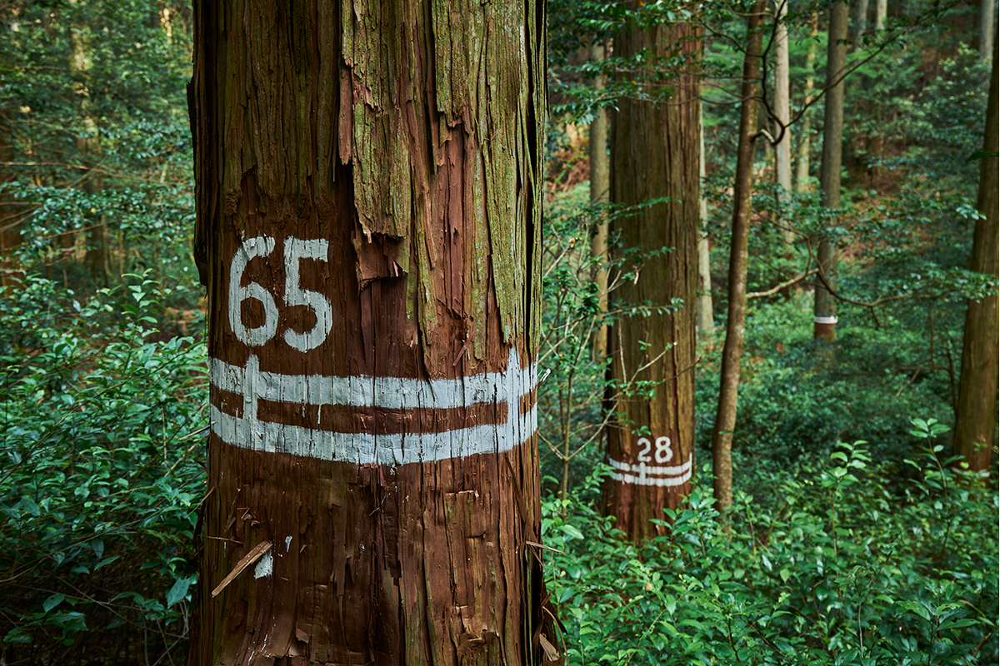
План управления лесом начался в 1923 году, и к 2023 году он прошёл половину пути. На одном из участков в начале эпохи Сёва, в конце 1920-х годов, посадили по 3000 хиноки на гектар. За 95 лет лес прореживали восемь раз, и теперь там осталось 200 деревьев на гектар, меньше десятой части. Это почти точно по плану. Средний диаметр стволов уже 54 см. Отобрано по тридцать с лишним тысяч будущих великанов и деревьев, которые должны дорасти до 60 см. Немногие горы в Японии управляются так тщательно.
Лес святилища к тому же символ земли, где живут боги. Среди широколиственных деревьев под кипарисами растёт и сакаки, знак «токовака». Со взрослых хиноки собирают семена, растят саженцы на грядках, и саженцы возвращаются в горы. Когда большое дерево срубят, его место займут молодые. Возрождение и вечный круговорот, дух «токовака», здесь можно увидеть в самом устройстве леса.
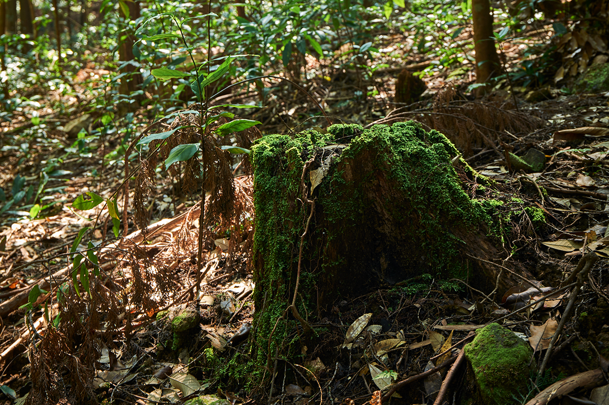
В 2023 году лесом святилища занимался лесной отдел из 30 человек в возрасте от двадцати до шестидесяти с лишним лет. Одни, как наш собеседник, составляют и выполняют план, другие обходят лес и следят, чтобы не было пожаров, третьи лазают на деревья за семенами, сажают, ухаживают и прореживают.
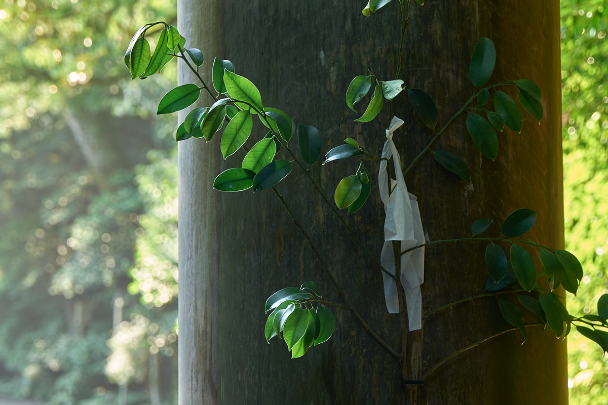
До двухсот лет, на которые рассчитан план, осталось ещё сто. Никто из тех, кто работает в лесу сегодня, этого дня не увидит.
«Пользоваться лесом можно только благодаря труду тех, кто был до нас. Мы смотрим в будущее, верим в силу природы и гордимся своим делом. Быть благодарными природе и предкам и передать лес дальше: в этом наша задача»
инженер-лесовод святилища
Беречь природу и при этом рубить лес и пользоваться им без ущерба: к этому равновесию и стремятся лесоводы. При последнем сэнгу часть древесины, пусть и от прореживания, впервые примерно за 700 лет взяли в собственном лесу святилища. Медленно, но верно Мисомаяма возвращается в Исэ.
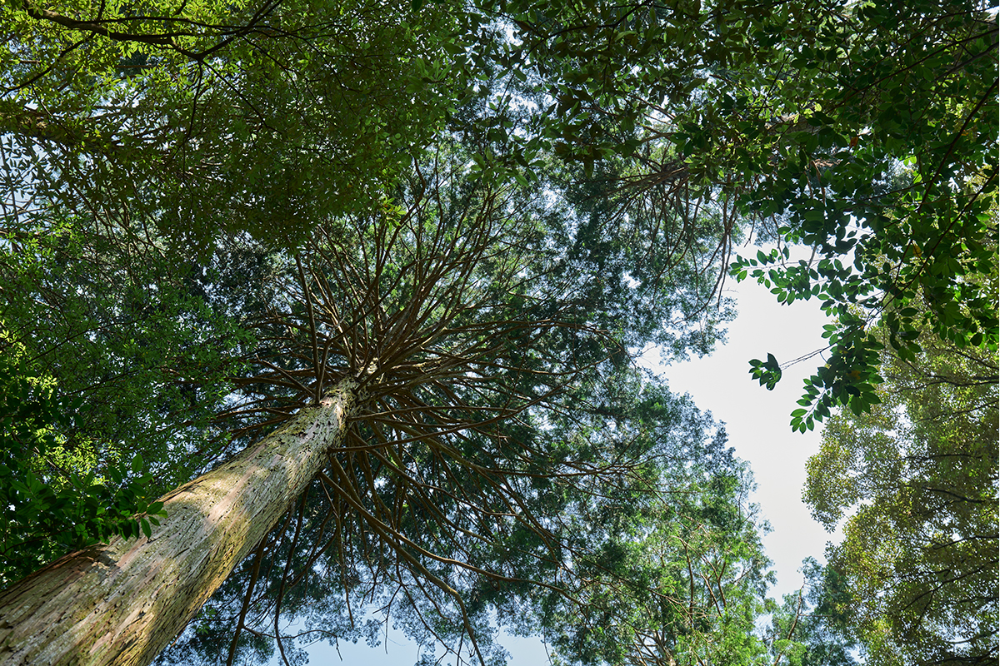
Обряды
Праздники священного дерева
Сикинэн сэнгу длится девять лет, и за это время проходит 33 праздника и обряда. Одна из трёх главных частей, вместе с праздниками строительства и праздниками перенесения божества, это праздники священного дерева. Они связаны со святилищем всю его историю и проходят в тишине, с благоговением перед деревом и лесом.
Ямагути-сай
Перед тем как рубить лес для новых святилищ, молятся богу, который живёт у входа в гору Мисомаяма, чтобы рубка и вывоз прошли благополучно. Мисомаяма за века переместилась далеко от Исэ, но этот праздник и сегодня проводят у подножия гор Камидзи и Такакура рядом со святилищем.
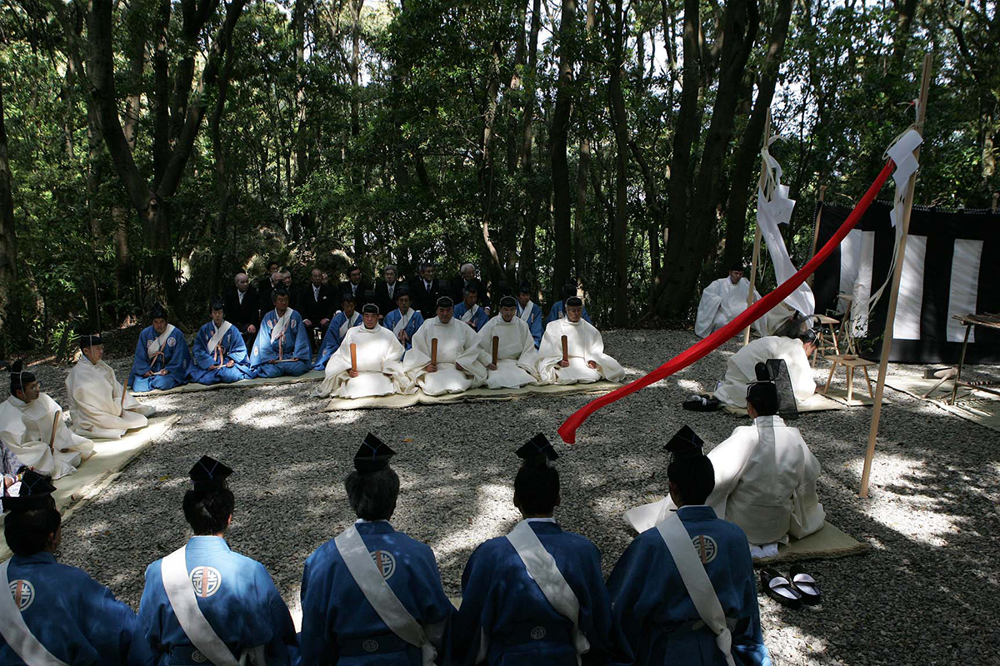
Мисомахадзимэ-сай
С этого праздника официально начинают рубить деревья на горе Мисомаяма в Кисо. Выбирают два хиноки, которые стоят рядом справа и слева: из них сделают «михисироги», вместилище для священного тела божества. Их валят старинным способом «мицуо-гири».
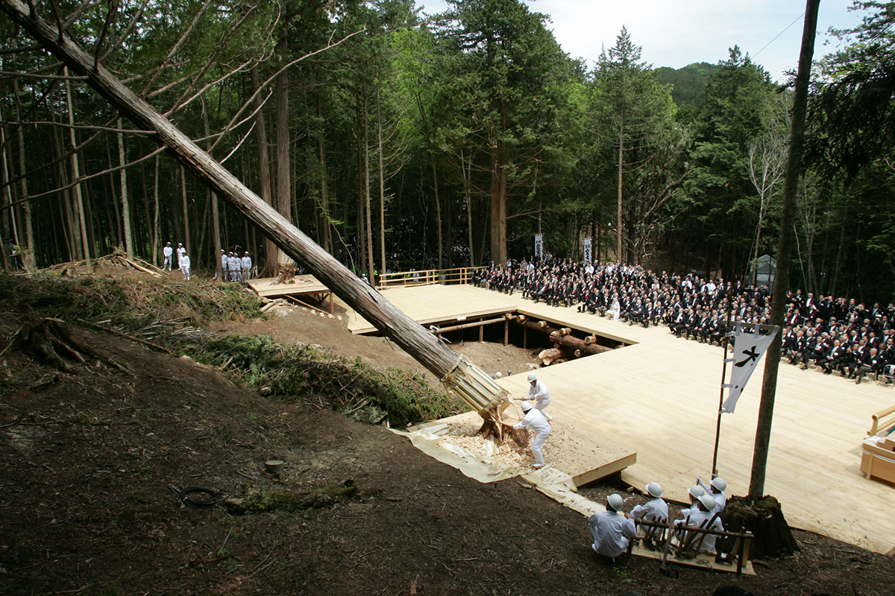
Когда дерево срубят топорами, в пень втыкают его верхушку. Обряд называется «тобуса-тате»: это просьба о возрождении и благодарность дереву, и о нём пишут ещё в «Манъёсю», древнейшей японской антологии стихов VIII века.
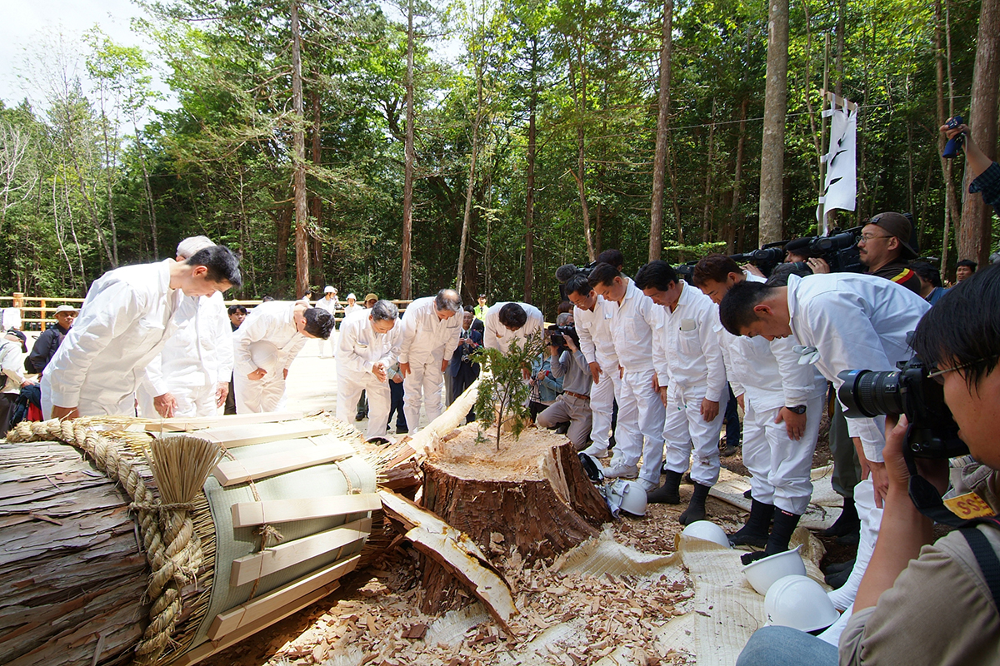
Михисироги-хоэй-сики
Дерево для михисироги, срубленное в Кисо, привозят в Исэ и по старинному обычаю втягивают на территорию Найку и Гэку, к павильонам Годзёдэн.
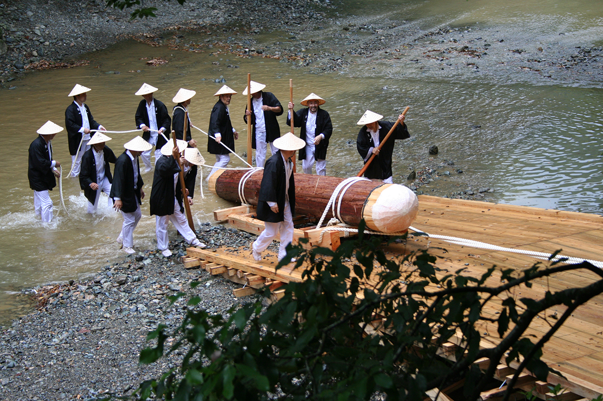
Мифунасиро-сай
Праздник, на котором рубят хиноки для «мифунасиро», ковчега, куда помещают михисироги. Его проводят на площадках Мияма-сайдзё внутри Найку и Гэку в тот же час, когда в Кисо валят деревья.
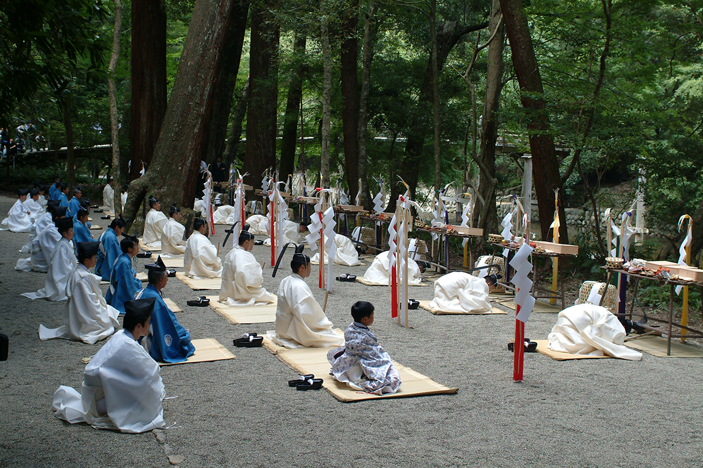
Перед прошлым, 62-м сэнгу праздники священного дерева шли так. В мае 2005 года прошли Ямагути-сай и Комото-сай, в июне 2005 года Мисомахадзимэ-сай, торжественная рубка в Ура-Кисо и Михисироги-хоэй-сики, в сентябре 2005 года Мифунасиро-сай. В апреле 2006 года начали церемонию Окихики, когда горожане тянут брёвна в святилище, и Кодзукури-хадзимэ-сай, начало строительных работ. Сами шествия Окихики прошли в мае–июле 2006 года и в мае–июле 2007 года.
Следующий, 63-й сэнгу начался с Ямагути-сай в мае 2025 года и продлится девять лет. Сам лес Кюикирин закрыт для посетителей, но его горы видно с моста Удзи и с дорожек Найку.
Святилище Исэ, Внутреннее святилище Найку
- Адрес
- префектура Миэ, Исэ, Удзитати-тё, 1
- Сайт
- isejingu.or.jp
Фото: Марико Тая; фото праздников: Управление святилища Исэ.